Cellular Structure and Function
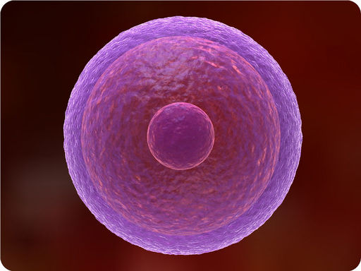
What is this incredible object? Would it surprise you to learn that it represents a human cell? The image represents a cell, similar to one that may be produced by a type of modern microscope called an electron microscope. Without this technology, we wouldn’t be able to see the structures inside cells. Cells may be small in size, but they are extremely important to life. Like all other living things, you are made of cells. Cells are the basis of life, and without cells, life as we know it would not exist. You will learn more about these amazing building blocks of life when you read this chapter.
Introduction to Cells
Lesson Objectives
-
State the cell theory, and list the discoveries that led to it.
-
Describe the diversity of cell shapes, and explain why cells are so small.
-
Identify the parts that all cells have in common.
-
Contrast prokaryotic and eukaryotic cells.
Vocabulary
-
cytoplasm
-
eukaryote
-
eukaryotic cell
-
nucleus
-
organelle
-
plasma membrane
-
prokaryote
-
prokaryotic cell
-
ribosome
-
virus
Introduction
If you look at living matter with a microscope—even a simple light microscope—you will see that it consists of cells. Cells are the basic units of the structure and function of living things. They are the smallest units that can carry out the processes of life. All organisms are made up of one or more cells, and all cells have many of the same structures and carry out the same basic life processes. Knowing the structures of cells and the processes they carry out is necessary to understanding life itself.
Discovery of Cells
The first time the word
cell
was used to refer to these tiny units of life was in 1665 by a British scientist named Robert Hooke. Hooke was one of the earliest scientists to study living things under a microscope. The microscopes of his day were not very strong, but Hooke was still able to make an important discovery. When he looked at a thin slice of cork under his microscope, he was surprised to see what looked like a honeycomb. Hooke made the drawing in
Figure
below
to show what he saw. As you can see, the cork was made up of many tiny units, which Hooke called cells.
Cork Cells. This is what Robert Hooke saw when he looked at a thin slice of cork under his microscope. What type of material is cork? Do you know where cork comes from?
Leeuwenhoek’s Discoveries
Soon after Robert Hooke discovered cells in cork, Anton van Leeuwenhoek in Holland made other important discoveries using a microscope. Leeuwenhoek made his own microscope lenses, and he was so good at it that his microscope was more powerful than other microscopes of his day. In fact, Leeuwenhoek’s microscope was almost as strong as modern light microscopes. Using his microscope, Leeuwenhoek discovered tiny animals such as rotifers. The magnified image of a rotifer in
Figure
below
is similar to what Leeuwenhoek observed. Leeuwenhoek also discovered human blood cells. He even scraped plaque from his own teeth and observed it under the microscope. What do you think Leeuwenhoek saw in the plaque? He saw tiny living things with a single cell that he named
animalcules
(“tiny animals”). Today, we call Leeuwenhoek’s animalcules bacteria.
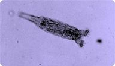
Microscopic Rotifer. Rotifers like this one were first observed by Aton van Leeuwenhoek. This tiny animal is too small to be seen without a microscope.
The Cell Theory
By the early 1800s, scientists had observed the cells of many different organisms. These observations led two German scientists, named Theodor Schwann and Matthias Jakob Schleiden, to propose that cells are the basic building blocks of all living things. Around 1850, a German doctor named Rudolf Virchow was studying cells under a microscope when he happened to see them dividing and forming new cells. He realized that living cells produce new cells through division. Based on this realization, Virchow proposed that living cells arise only from other living cells. The ideas of all three scientists—Schwann, Schleiden, and Virchow—led to the cell theory, which is one of the fundamental theories of biology. The cell theory states that:
-
All organisms are made of one or more cells.
-
All the life functions of organisms occur within cells.
-
All cells come from already existing cells.
Microscopes
Starting with Robert Hooke in the 1600s, the microscope opened up an amazing new world—the world of life at the level of the cell. As microscopes continued to improve, more discoveries were made about the cells of living things. However, by the late 1800s, light microscopes had reached their limit. Objects much smaller than cells, including the structures inside cells, were too small to be seen with even the strongest light microscope. Then, in the 1950s, a new type of microscope was invented. Called the electron microscope, it used a beam of electrons instead of light to observe extremely small objects. With an electron microscope, scientists could finally see the tiny structures inside cells. In fact, they could even see individual molecules and atoms. The electron microscope had a huge impact on biology. It allowed scientists to study organisms at the level of their molecules and led to the emergence of the field of molecular biology. With the electron microscope, many more cell discoveries were made.
Figure
below
shows how the cell structures called organelles appear when scanned by an electron microscope.
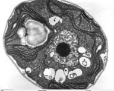
Electron Microscope Image of Organelles. An electron microscope produced this image of a cell.
KQED: The World's Most Powerful Microscope
Lawrence Berkeley National labs uses a $27 million electron microscope to make images to a resolution of half the width of a hydrogen atom. This makes it the world's most powerful microscope. See
http://www.kqed.org/quest/television/the-worlds-most-powerful-microscope
and
http://www.kqed.org/quest/slideshow/web-extra-images-from-the-worlds-most-powerful-microscope
for more information.
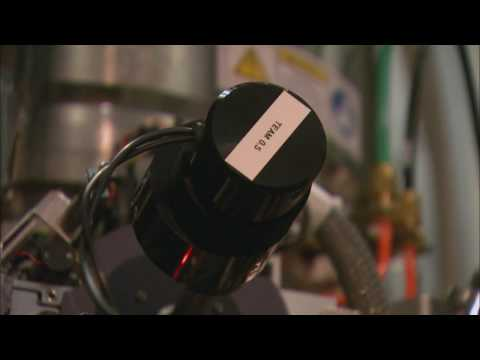
Click on the image above for more content
KQED: Confocal Microscopy
Cutting-edge microscopes, called confocal microscopes, at the University of California, San Francisco are helping scientists create three-dimensional images of cells, and may help lead to new medical breakthroughs, including a treatment for Type 1 diabetes. See
http://www.kqed.org/quest/television/super-microscope
for a description of this work.
Diversity of Cells
Today, we know that all living cells have certain things in common. For example, all cells share functions such as obtaining and using energy, responding to the environment, and reproducing. We also know that different types of cells—even within the same organism—may have their own unique functions as well. Cells with different functions generally have different shapes that suit them for their particular job. Cells vary in size as well as shape, but all cells are very small. In fact, most cells are much smaller than the period at the end of this sentence. If cells have such an important role in living organisms, why are they so small? Even the largest organisms have microscopic cells. What limits cell size?
Cell Size
The answer to these questions is clear once you know how a cell functions. To carry out life processes, a cell must be able to quickly pass substances into and out of the cell. For example, it must be able to pass nutrients and oxygen into the cell and waste products out of the cell. Anything that enters or leaves a cell must cross its outer surface. It is this need to pass substances across the surface that limits how large a cell can be. Look at the two cubes in
Figure
below
. As this figure shows, a larger cube has less surface area relative to its volume than a smaller cube. This relationship also applies to cells; a larger cell has less surface area relative to its volume than a smaller cell. A cell with a larger volume also needs more nutrients and oxygen and produces more wastes. Because all of these substances must pass through the surface of the cell, a cell with a large volume will not have enough surface area to allow it to meet its needs. The larger the cell is, the smaller its ratio of surface area to volume, and the harder it will be for the cell to get rid of its wastes and take in necessary substances. This is what limits the size of the cell.
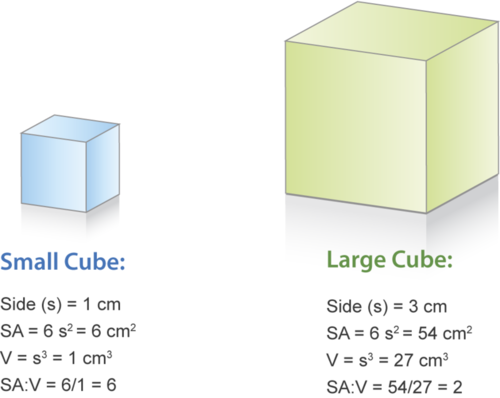
Surface Area to Volume Comparison. A larger cube has a smaller surface area (SA) to volume (V) ratio than a smaller cube. This also holds true for cells and limits how large they can be.
Cell Shape
Cells with different functions often have different shapes. The cells pictured in
Figure
below
are just a few examples of the many different shapes that cells may have. Each type of cell in the figure has a shape that helps it do its job. For example, the job of the nerve cell is to carry messages to other cells. The nerve cell has many long extensions that reach out in all directions, allowing it to pass messages to many other cells at once. Do you see the tail-like projections on the algae cells? Algae live in water, and their tails help them swim. Pollen grains have spikes that help them stick to insects such as bees. How do you think the spikes help the pollen grains do their job? (
Hint:
Insects pollinate flowers.)
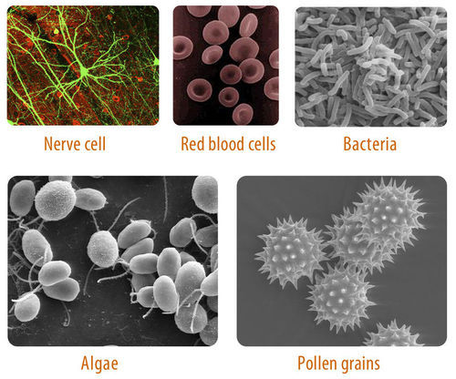
As these pictures show, cells come in many different shapes. Clockwise from the upper left photo are a nerve cell, red blood cells, bacteria, pollen grains, and algae. How are the shapes of these cells related to their functions?
Parts of a Cell
Although cells are diverse, all cells have certain parts in common. The parts include a plasma membrane, cytoplasm, ribosomes, and DNA.
-
The
plasma membrane
(also called the cell membrane) is a thin coat of lipids that surrounds a cell. It forms the physical boundary between the cell and its environment, so you can think of it as the “skin” of the cell.
-
Cytoplasm
refers to all of the cellular material inside the plasma membrane. Cytoplasm is made up of a watery substance called cytosol and contains other cell structures such as ribosomes.
-
Ribosomes
are structures in the cytoplasm where proteins are made.
-
DNA is a nucleic acid found in cells. It contains the genetic instructions that cells need to make proteins.
These parts are common to all cells, from organisms as different as bacteria and human beings. How did all known organisms come to have such similar cells? The similarities show that all life on Earth has a common evolutionary history.
A nice introduction to the cell is available at
http://www.youtube.com/watch?v=Hmwvj9X4GNY
(21:03).
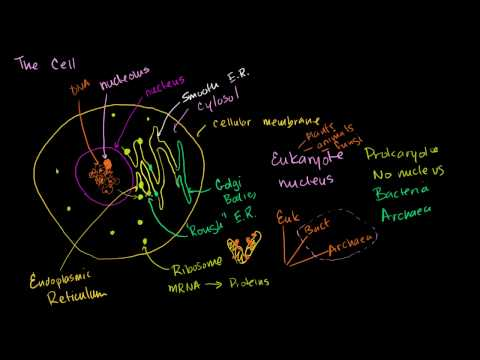
Click on the image above for more content
Two Types of Cells
There is another basic cell structure that is present in many but not all living cells: the nucleus. The
nucleus
of a cell is a structure in the cytoplasm that is surrounded by a membrane (the nuclear membrane) and contains DNA. Based on whether they have a nucleus, there are two basic types of cells: prokaryotic cells and eukaryotic cells. You can watch animations of both types of cells at the link below.
http://www.learnerstv.com/animation/animation.php?ani=162&cat=biology
Prokaryotic Cells
Prokaryotic cells
are cells without a nucleus. The DNA in prokaryotic cells is in the cytoplasm rather than enclosed within a nuclear membrane. Prokaryotic cells are found in single-celled organisms, such as bacteria, like the one shown in
Figure
below
. Organisms with prokaryotic cells are called
prokaryotes
. They were the first type of organisms to evolve and are still the most common organisms today.
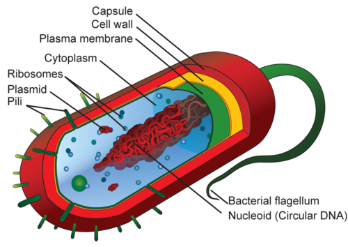
Prokaryotic Cell. This diagram shows the structure of a typical prokaryotic cell, a bacterium. Like other prokaryotic cells, this bacterial cell lacks a nucleus but has other cell parts, including a plasma membrane, cytoplasm, ribosomes, and DNA. Identify each of these parts in the diagram.
Bacteria are described in the following video
http://www.youtube.com/watch?v=TDoGrbpJJ14
(18:26).
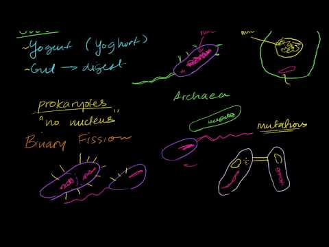
Click on the image above for more content
Eukaryotic Cells
Eukaryotic cells
are cells that contain a nucleus. A typical eukaryotic cell is shown in
Figure
below
. Eukaryotic cells are usually larger than prokaryotic cells, and they are found mainly in multicellular organisms. Organisms with eukaryotic cells are called
eukaryotes
, and they range from fungi to people. Eukaryotic cells also contain other organelles besides the nucleus. An
organelle
is a structure within the cytoplasm that performs a specific job in the cell. Organelles called mitochondria, for example, provide energy to the cell, and organelles called vacuoles store substances in the cell. Organelles allow eukaryotic cells to carry out more functions than prokaryotic cells can.
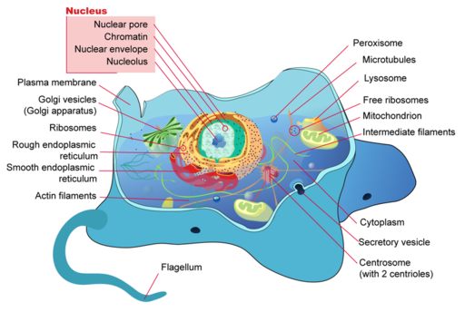
Eukaryotic Cell. Compare and contrast the eukaryotic cell shown here with the prokaryotic cell. What similarities and differences do you see?
Viruses: Prokaryotes or Eukaryotes?
Viruses
, like the one depicted in
Figure
below
, are tiny particles that may cause disease. Human diseases caused by viruses include the common cold and flu. Do you think viruses are prokaryotes or eukaryotes? The answer may surprise you. Viruses are not cells at all, so they are neither prokaryotes nor eukaryotes.
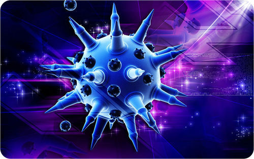
Cartoon of a flu virus. The flu virus is a tiny particle that may cause illness in humans. What is a virus? Is it a cell? Is it even alive?
Viruses contain DNA but not much else. They lack the other parts shared by all cells, including a plasma membrane, cytoplasm, and ribosomes. Therefore, viruses are not cells, but are they alive? All living things not only have cells; they are also capable of reproduction. Viruses cannot reproduce by themselves. Instead, they infect living hosts, and use the hosts’ cells to make copies of their own DNA. For these reasons, most scientists do not consider viruses to be living things.
An overview of viruses can be seen at
http://www.youtube.com/watch?v=0h5Jd7sgQWY
(23:17).
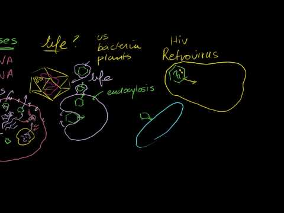
Click on the image above for more content
Lesson Summary
-
Discoveries about cells using the microscope led to the development of the cell theory. This theory states that all organisms are made of one or more cells, all the life functions of organisms occur within cells, and all cells come from already existing cells.
-
All cells are very small because they need to pass substances across their surface. Their small size gives them a relatively large ratio of surface area to volume, facilitating the transfer of substances. The shapes of cells may vary, and a cell’s shape generally suits its function.
-
Cells are diverse, but all cells contain a plasma membrane, cytoplasm, ribosomes, and DNA.
-
Prokaryotic cells are cells without a nucleus. They are found in single-celled organisms. Eukaryotic cells are cells with a nucleus and other organelles. They are found mainly in multicellular organisms.
Review Questions
Recall
1. What did Hooke and Leeuwenhoek discover about cells by using a microscope?
2. What does the cell theory state? Name the three scientists mainly responsible for developing the cell theory.
3. List the four parts that are found in all living cells.
Apply Concepts
4. One of the cells pictured below is a human brain cell. The other cell is found in human blood. Which cell came from the brain? Explain your answer.
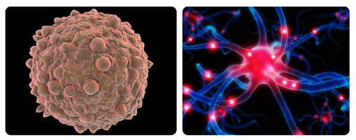
Think Critically
5. Why are all cells very small? Explain what limits the size of cells.
6. Compare and contrast prokaryotic cells and eukaryotic cells.
7. Explain why viruses are not considered to be living.
Points to Consider
Cells have many different structures that carry out the processes of life.
-
Beside the cell parts described in this lesson, what other structures do you think cells might have? What life processes might these other structures carry out?
-
Do you think plant and animal cells are just alike? Or do they differ in some way? How might they differ?
Cell Structures
Lesson Objectives
-
Describe the structure and function of the plasma membrane.
-
Identify the roles of the cytoplasm and cytoskeleton.
-
Outline the form and function of the nucleus and other organelles.
-
List special structures of plant cells, and state what they do.
-
Explain how cells are organized in living things.
Vocabulary
-
ATP
-
cell wall
-
central vacuole
-
chloroplast
-
cytoskeleton
-
endoplasmic reticulum
-
endosymbiotic theory
-
Golgi apparatus
-
mitochondria
-
phospholipid bilayer
-
vacuole
-
vesicle
Introduction
Your body is made up of trillions of cells, but all of them perform the same basic life functions. They all obtain and use energy, respond to the environment, and reproduce. How do your cells carry out these basic functions and keep themselves—and you—alive? To answer these questions, you need to know more about the structures that make up cells.
Overview of Cell Structures
In some ways, a cell resembles a plastic bag full of Jell-O. Its basic structure is a plasma membrane filled with cytoplasm. Like Jell-O containing mixed fruit, the cytoplasm of the cell also contains various structures, such as a nucleus and other organelles.
Figure
below
shows the structures inside a typical eukaryotic cell, in this case the cell of an animal. Refer to the figure as you read about the structures below. You can also explore the structures of an interactive animal cell at this link:
http://www.cellsalive.com/cells/cell_model.htm
.
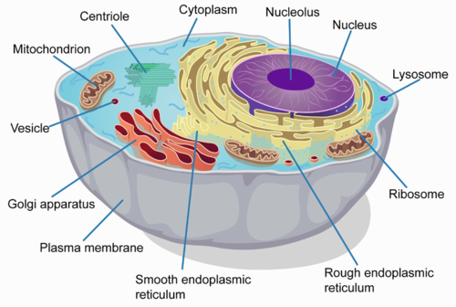
Animal Cell. This animal cell consists of cytoplasm enclosed within a plasma membrane. The cytoplasm contains many different organelles.
The Plasma Membrane
The plasma membrane forms a barrier between the cytoplasm inside the cell and the environment outside the cell. It protects and supports the cell and also controls everything that enters and leaves the cell. It allows only certain substances to pass through, while keeping others in or out. The ability to allow only certain molecules in or out of the cell is referred to as selective permeability or semipermeability. To understand how the plasma membrane controls what crosses into or out of the cell, you need to know its composition.
The plasma membrane is discussed at
http://www.youtube.com/watch?v=-aSfoB8Cmic
(6:16). The cell wall (see below) is also discussed in this video.
The Phospholipid Bilayer
The plasma membrane is composed mainly of phospholipids, which consist of fatty acids and alcohol. The phospholipids in the plasma membrane are arranged in two layers, called a
phospholipid bilayer
. As shown in
Figure
below
, each phospholipid molecule has a head and two tails. The head “loves” water (hydrophilic) and the tails “hate” water (hydrophobic). The water-hating tails are on the interior of the membrane, whereas the water-loving heads point outwards, toward either the cytoplasm or the fluid that surrounds the cell. Molecules that are hydrophobic can easily pass through the plasma membrane, if they are small enough, because they are water-hating like the interior of the membrane. Molecules that are hydrophilic, on the other hand, cannot pass through the plasma membrane—at least not without help—because they are water-loving like the exterior of the membrane.

Phospholipid Bilayer. The phospholipid bilayer consists of two layers of phospholipids, with a hydrophobic, or water-hating, interior and a hydrophilic, or water-loving, exterior. The hydrophilic (polar) head group and hydrophobic tails (fatty acid chains) are depicted in the single phospholipid molecule. The polar head group and fatty acid chains are attached by a 3-carbon glycerol unit.
Other Molecules in the Plasma Membrane
The plasma membrane also contains other molecules, primarily other lipids and proteins. The green molecules in
Figure
above
, for example, are the lipid cholesterol. Molecules of cholesterol help the plasma membrane keep its shape. Many of the proteins in the plasma membrane assist other substances in crossing the membrane.
Extensions of the Plasma Membrane
The plasma membrane may have extensions, such as whip-like flagella or brush-like cilia. In single-celled organisms, like those shown in
Figure
below
, the membrane extensions may help the organisms move. In multicellular organisms, the extensions have other functions. For example, the cilia on human lung cells sweep foreign particles and mucus toward the mouth and nose.
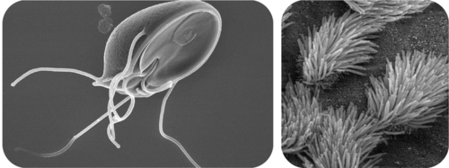
Flagella (left) and cilia (right). Flagella and cilia are extensions of the plasma membrane of many cells.
Cytoplasm and Cytoskeleton
The cytoplasm consists of everything inside the plasma membrane of the cell. It includes the watery, gel-like material called cytosol, as well as various structures. The water in the cytoplasm makes up about two thirds of the cell’s weight and gives the cell many of its properties.
Functions of the Cytoplasm
The cytoplasm has several important functions, including
-
suspending cell organelles
-
pushing against the plasma membrane to help the cell keep its shape
-
providing a site for many of the biochemical reactions of the cell
Cytoskeleton
Crisscrossing the cytoplasm is a structure called the
cytoskeleton
, which consists of thread-like filaments and tubules. You can see these filaments and tubules in the cells in
Figure
below
. As its name suggests, the cytoskeleton is like a cellular “skeleton.” It helps the cell maintain its shape and also holds cell organelles in place within the cytoplasm.
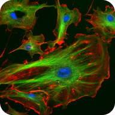
Cytoskeleton. The cytoskeleton gives the cell an internal structure, like the frame of a house. In this photograph, filaments and tubules of the cytoskeleton are green and red, respectively. The blue dots are cell nuclei.
The cytoskeleton is discussed in the following video
http://www.youtube.com/watch?v=5rqbmLiSkpk
(4:50).
The Nucleus and Other Organelles
Eukaryotic cells contain a nucleus and several other types of organelles. These structures are involved in many vital cell functions.
The Nucleus
The nucleus is the largest organelle in a eukaryotic cell and is often considered to be the cell’s control center. This is because the nucleus controls which proteins the cell makes. The nucleus of a eukaryotic cell contains most of the cell’s DNA, which makes up chromosomes and is encoded with genetic instructions for making proteins.
Mitochondria
The mitochondrion (plural,
mitochondria
) is an organelle that makes energy available to the cell. This is why mitochondria are sometimes referred to as the power plants of the cell. They use energy from organic compounds such as glucose to make molecules of
ATP
(adenosine triphosphate), an energy-carrying molecule that is used almost universally inside cells for energy. Scientists think that mitochondria were once free-living organisms because they contain their own DNA. They theorize that ancient prokaryotes infected (or were engulfed by) larger prokaryotic cells, and the two organisms evolved a symbiotic relationship that benefited both of them. The larger cells provided the smaller prokaryotes with a place to live. In return, the larger cells got extra energy from the smaller prokaryotes. Eventually, the prokaryotes became permanent
guests
of the larger cells, as organelles inside them. This theory is called the
endosymbiotic theory,
and it is widely accepted by biologists today
Endoplasmic Reticulum
The
endoplasmic reticulum
(ER) is an organelle that helps make and transport proteins and lipids. There are two types of endoplasmic reticulum: rough endoplasmic reticulum (RER) and smooth endoplasmic reticulum (SER). Both types are shown in
Figure
below
.
-
RER looks rough because it is studded with ribosomes. It provides a framework for the ribosomes, which make proteins. Bits of its membrane pinch off to form tiny sacs called vesicles, which carry proteins away from the ER.
-
SER looks smooth because it does not have ribosomes. SER also makes lipids, stores substances, and plays other roles.
Ribosomes
Ribosomes are small organelles where proteins are made. They contain the nucleic acid RNA, which assembles and joins amino acids to make proteins. Ribosomes can be found alone or in groups within the cytoplasm as well as on the RER.
Golgi Apparatus
The
Golgi apparatus
is a large organelle that processes proteins and prepares them for use both inside and outside the cell. It is shown in
Figure
below
. The Golgi apparatus is somewhat like a post office. It receives items (proteins from the ER), packages and labels them, and then sends them on to their destinations (to different parts of the cell or to the cell membrane for transport out of the cell). The Golgi apparatus is also involved in the transport of lipids around the cell. At the link below, you can watch an animation showing how the Golgi apparatus does all these jobs.
http://www.johnkyrk.com/golgiAlone.html
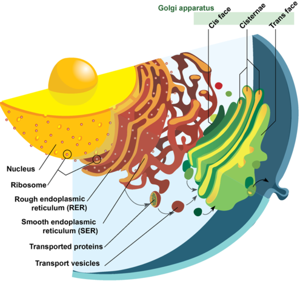
This drawing includes the nucleus, RER, SER, and Golgi apparatus. From the drawing, you can see how all these organelles work together to make and transport proteins.
Vesicles and Vacuoles
Both
vesicles
and
vacuoles
are sac-like organelles that store and transport materials in the cell. Vesicles are much smaller than vacuoles and have a variety of functions. The vesicles that pinch off from the membranes of the ER and Golgi apparatus (see
Figure
above
) store and transport protein and lipid molecules. Some vesicles are used as chambers for biochemical reactions. Other vesicles include:
-
Lysosomes, which use enzymes to break down foreign matter and dead cells.
-
Peroxisomes, which use oxygen to break down poisons.
Centrioles
Centrioles are organelles involved in cell division. They help organize the chromosomes before cell division so that each daughter cell has the correct number of chromosomes after the cell divides. Centrioles are found only in animal cells and are located near the nucleus (see
Figure
above
).
Special Structures in Plant Cells
Plant cells have several structures that are not found in animal cells, including a cell wall, a large central vacuole, and organelles called plastids. You can see each of these structures in
Figure
below
. You can also view them in an interactive plant cell at the link below.
http://www.cellsalive.com/cells/cell_model.htm
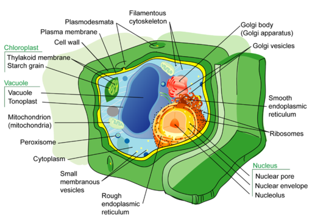
Plant Cell. In addition to the organelles and other structures found inside animal cells, plant cells also have a cell wall, a large central vacuole, and plastids such as chloroplasts. Can you find each of these structures in the figure?
Cell Wall
The
cell wall
is a rigid layer that surrounds the plasma membrane of a plant cell. It supports and protects the cell. Tiny holes, or pores, in the cell wall allow water, nutrients, and other substances to move into and out of the cell. The cell wall is made up mainly of complex carbohydrates, including cellulose.
Central Vacuole
Most mature plant cells have a large
central vacuole
. This vacuole can make up as much as 90% of the cell’s volume. The central vacuole has a number of functions, including storing substances such as water, enzymes, and salts. It also helps plant tissues, such as stems and leaves, stay rigid and hold their shape. It even helps give flowers, like the ones in
Figure
below
, their beautiful colors.
These flowers are red because of red pigment molecules in the central vacuoles of their cells. The bright colors are an important adaptation. They help the flowers attract pollinators such as hummingbirds so the plants can reproduce.
Plastids
Plastids are organelles in plant cells that carry out a variety of different functions. The main types of plastids and their functions are described below.
-
Chloroplasts
are plastids that contain the green pigment chlorophyll. They capture light energy from the sun and use it to make food. A chloroplast is shown in
Figure
above
.
-
Chromoplasts are plastids that make and store other pigments. The red pigment that colors the flower petals in
Figure
above
was made by chromoplasts.
-
Leucoplasts are plastids that store substances such as starch or make small molecules such as amino acids.
Like mitochondria, plastids contain their own DNA. Therefore, according to endosymbiotic theory, plastids may also have evolved from ancient, free-living prokaryotes that invaded larger prokaryotic cells. If so, they allowed early eukaryotes to make food and produce oxygen.
Organization of Cells
Cells can exist as individual cells or as groups of cells. Cells in groups can be organized at several levels.
From One Cell to Many
The simplest level of cell organization is a single-celled organism, and the most complex level is a multicellular organism. In between these two levels are biofilms and colonies.
-
A single-celled organism floats freely and lives independently. Its single cell is able to carry out all the processes of life without any help from other cells.
-
A biofilm is a thin layer of bacteria that sticks to a surface. Cells in a biofilm are all alike, but they may play different roles, such as taking in nutrients or making the “glue” that sticks the biofilm to the surface. The sticky plaque that forms on teeth is a biofilm of bacterial cells.
-
Some single-celled organisms, such as algae, live in colonies. A colony is an organized structure composed of many cells, like the Volvox sphere in
Figure
below
. Volvox are algae that live in colonies of hundreds of cells. All of the cells in the colony live and work cooperatively. For example, they can coordinate the movement of their flagella, allowing them to swim together through the water as though they were part of a single organism.
-
A multicellular organism consists of many cells and has different types of cells that are specialized for various functions. All the cells work together and depend on each other to carry out the life processes of the organism. Individual cells are unable to survive on their own.
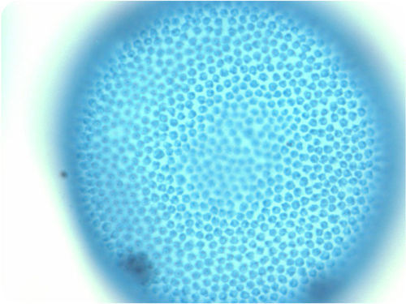
Volvox Colony. Volvox cells live in a colony shaped like a hollow ball. The cells of the colony may be connected by strands of cytoplasm and can function together. For example, the whole colony can swim from one place to another as one.
Levels of Organization in Multicellular Organisms
Scientists think that multicellular organisms evolved when many single-celled organisms of the same species started to work together and benefited from the relationship. The oldest known multicellular organisms are algae that lived 1.2 billion years ago. As multicellular organisms continued to evolve, they developed increasingly complex levels of organization. Today there are multicellular organisms at all levels of organization, from the simplest, cell level of organization to the most complex, organ-system level of organization. Consider these examples:
-
Sponges have cell-level organization, in which different cells are specialized for different functions, but each cell works alone. For example, some cells digest food, while other cells let water pass through the sponge.
-
Jellyfish have tissue-level organization, in which groups of cells of the same kind that do the same job form tissues. For example, jellyfish have some tissues that digest food and other tissues that sense the environment.
-
Roundworms have organ-level organization, in which two or more types of tissues work together to perform a particular function as an organ. For example, a roundworm has a primitive brain that controls how the organism responds to the environment.
-
Human beings have organ system-level organization, in which groups of organs work together to do a certain job, with each organ doing part of the overall task. An example is the human digestive system. Each digestive system organ—from the mouth to the small intestine—does part of the overall task of breaking down food and absorbing nutrients.
Lesson Summary
-
The plasma membrane is a phospholipid bilayer that supports and protects a cell and controls what enters and leaves it.
-
The cytoplasm consists of everything inside the plasma membrane, including watery cytosol and organelles. The cytoplasm suspends the organelles and does other jobs. The cytoskeleton crisscrosses the cytoplasm and gives the cell an internal framework.
-
The nucleus is the largest organelle in a eukaryotic cell and contains most of the cell’s DNA. Other organelles in eukaryotic cells include the mitochondria, endoplasmic reticulum, ribosomes, Golgi apparatus, vesicles, vacuoles, and centrioles (in animal cells only). Each type of organelle has important functions in the cell.
-
Plant cells have special structures that are not found in animal cells, including a cell wall, a large central vacuole, and organelles called plastids.
-
Cells can exist independently as single-celled organisms or with other cells as multicellular organisms. Cells of a multicellular organism can be organized at the level of cells, tissues, organs, and organ systems.
Lesson Review Questions
Recall
1. Describe the composition of the plasma membrane.
2. List functions of the cytoplasm and cytoskeleton.
3. What is the role of the nucleus of a eukaryotic cell?
4. List three structures that are found in plant cells but not in animal cells.
5. Outline the levels of organization of cells in living things, starting with the simplest level, that of single-celled organisms.
Apply Concepts
6. Create a diagram to show how the cells of multicellular organisms may be organized at different levels, from the level of the cell to the level of the organ system. Give an example of a multicellular organism at each level of organization.
Think Critically
7. Explain why hydrophobic (“water-hating”) molecules can easily cross the plasma membrane, while hydrophilic (“water-loving”) molecules cannot.
8. What is endosymbiotic theory? How does it explain the presence of certain organelles in eukaryotic cells?
9. Explain how the following organelles ensure that a cell has the proteins it needs: nucleus, rough and smooth ER, vesicles, and Golgi apparatus.
Points to Consider
Cells carry out all the functions of life, and they use nutrients and oxygen and produce wastes. These substances must cross the plasma membrane.
-
How do you think substances cross the plasma membrane to enter or leave the cell? Does the membrane have tiny holes in it like a sieve?
-
What if the substances are large? Protein molecules, for example, are very large. How do they enter or leave the cell?
Cell Transport and Homeostasis
Lesson Objectives
-
Describe different types of passive transport.
-
Explain how different types of active transport occur.
-
Outline the role of cell transport in homeostasis.
Vocabulary
-
active transport
-
diffusion
-
endocytosis
-
exocytosis
-
facilitated diffusion
-
osmosis
-
passive transport
-
sodium-potassium pump
-
transport protein
-
vesicle transport
Introduction
Imagine living in a house that has walls without any windows or doors. Nothing could enter or leave the house. Now imagine living in a house with holes in the walls instead of windows and doors. Things could enter or leave the house, but you wouldn’t be able to control what came in or went out. Only if a house has walls with windows and doors that can be opened or closed can you control what enters or leaves. For example, windows and doors allow you to let the dog in and keep the bugs out.
Transport Across Membranes
If a cell were a house, the plasma membrane would be walls with windows and doors. Moving things in and out of the cell is an important role of the plasma membrane. It controls everything that enters and leaves the cell. There are two basic ways that substances can cross the plasma membrane: passive transport and active transport.
Passive Transport
Passive transport
occurs when substances cross the plasma membrane without any input of energy from the cell. No energy is needed because the substances are moving from an area where they have a higher concentration to an area where they have a lower concentration. Concentration refers to the number of particles of a substance per unit of volume. The more particles of a substance in a given volume, the higher the concentration. A substance always moves from an area where it is more concentrated to an area where it is less concentrated. It’s a little like a ball rolling down a hill. It goes by itself without any input of extra energy.
There are several different types of passive transport, including simple diffusion, osmosis, and facilitated diffusion. Each type is described below. You can also watch an animation of each type at this link:
http://www.northland.cc.mn.us/biology/BIOLOGY1111/animations/passive1.swf
.
Simple Diffusion
Diffusion
is the movement of a substance across a membrane, due to a difference in concentration, without any help from other molecules. The substance simply moves from the side of the membrane where it is more concentrated to the side where it is less concentrated.
Figure
below
shows how diffusion works. Substances that can squeeze between the lipid molecules in the plasma membrane by simple diffusion are generally very small, hydrophobic molecules, such as molecules of oxygen and carbon dioxide.
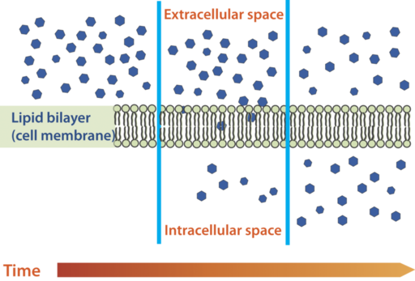
Diffusion Across a Cell Membrane. Molecules diffuse across a membrane from an area of higher concentration to an area of lower concentration until the concentration is the same on both sides of the membrane.
Osmosis
Osmosis
is a special type of diffusion — the diffusion of water molecules across a membrane. Like other molecules, water moves from an area of higher concentration to an area of lower concentration. Water moves in or out of a cell until its concentration is the same on both sides of the plasma membrane.
Diffusion and osmosis are discussed at
http://www.youtube.com/watch?v=aubZU0iWtgI
.
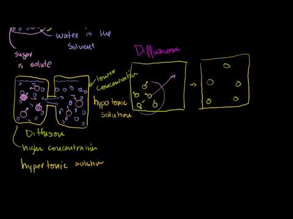
Click on the image above for more content
Facilitated Diffusion
Water and many other substances cannot simply diffuse across a membrane. Hydrophilic molecules, charged ions, and relatively large molecules such as glucose all need help with diffusion. The help comes from special proteins in the membrane known as
transport proteins
. Diffusion with the help of transport proteins is called
facilitated diffusion
. There are several types of transport proteins, including channel proteins and carrier proteins. Both are shown in
Figure
below
.
-
Channel proteins form pores, or tiny holes, in the membrane. This allows water molecules and small ions to pass through the membrane without coming into contact with the hydrophobic tails of the lipid molecules in the interior of the membrane.
-
Carrier proteins bind with specific ions or molecules, and in doing so, they change shape. As carrier proteins change shape, they carry the ions or molecules across the membrane.
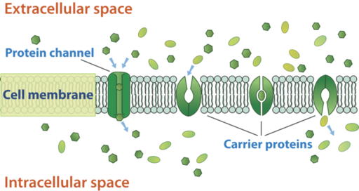
Facilitated Diffusion Across a Cell Membrane. Channel proteins and carrier proteins help substances diffuse across a cell membrane. In this diagram, the channel and carrier proteins are helping substances move into the cell (from the extracellular space to the intracellular space).
Active Transport
Active transport
occurs when energy is needed for a substance to move across a plasma membrane. Energy is needed because the substance is moving from an area of lower concentration to an area of higher concentration. This is a little like moving a ball uphill; it can’t be done without adding energy. The energy for active transport comes from the energy-carrying molecule called ATP. Like passive transport, active transport may also involve transport proteins. You can watch an animation of active transport at the link below.
http://www.northland.cc.mn.us/biology/BIOLOGY1111/animations/active1.swf
Sodium-Potassium Pump
An example of active transport is the
sodium-potassium pump
. When this pump is in operation, sodium ions are pumped out of the cell, and potassium ions are pumped into the cell. Both ions move from areas of lower to higher concentration, so ATP is needed to provide energy for this “uphill” process.
Figure
below
explains in more detail how this type of active transport occurs.

The sodium-potassium pump. The sodium-potassium pump moves sodium ions (Na+) out of the cell and potassium ions (K+) into the cell. First, three sodium ions bind with a carrier protein in the cell membrane. Then, the carrier protein receives a phosphate group from ATP. When ATP loses a phosphate group, energy is released. The carrier protein changes shape, and as it does, it pumps the three sodium ions out of the cell. At that point, two potassium ions bind to the carrier protein. The process is reversed, and the potassium ions are pumped into the cell.
A more detailed look at the sodium-potassium pump is available at
http://www.youtube.com/watch?v=C_H-ONQFjpQ
and
http://www.youtube.com/watch?v=ye3rTjLCvAU
.
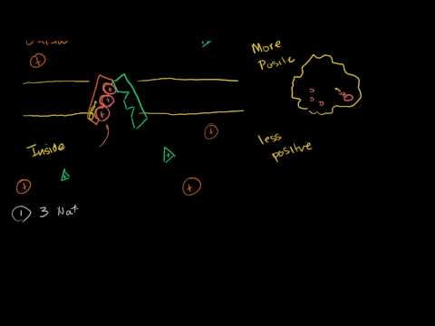
Click on the image above for more content
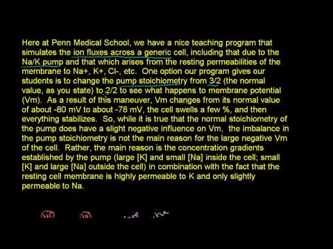
Click on the image above for more content
The following interactive animation demonstrates active transport.

Click on the image above for more content
Vesicle Transport
Some molecules, such as proteins, are too large to pass through the plasma membrane, regardless of their concentration inside and outside the cell. Very large molecules cross the plasma membrane with a different sort of help, called
vesicle transport
. Vesicle transport requires energy, so it is also a form of active transport. There are two types of vesicle transport: endocytosis and exocytosis. Both types are shown in
Figure
below
and described below.
-
Endocytosis
is the type of vesicle transport that moves a substance into the cell. The plasma membrane completely engulfs the substance, a vesicle pinches off from the membrane, and the vesicle carries the substance into the cell. When an entire cell is engulfed, the process is called phagocytosis. When fluid is engulfed, the process is called pinocytosis.
-
Exocytosis
is the type of vesicle transport that moves a substance out of the cell. A vesicle containing the substance moves through the cytoplasm to the cell membrane. Then, the vesicle membrane fuses with the cell membrane, and the substance is released outside the cell. You can watch an animation of exocytosis at the link below.
http://www.stanford.edu/group/Urchin/GIFS/exocyt.gif
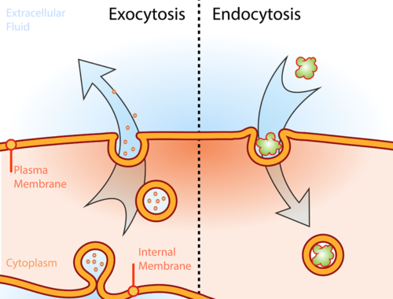
Illustration of the two types of vesicle transport, exocytosis and endocytosis.
Homeostasis and Cell Function
For a cell to function normally, a stable state must be maintained inside the cell. For example, the concentration of salts, nutrients, and other substances must be kept within a certain range. The process of maintaining stable conditions inside a cell (or an entire organism) is homeostasis. Homeostasis requires constant adjustments, because conditions are always changing both inside and outside the cell. The processes described in this lesson play important roles in homeostasis. By moving substances into and out of cells, they keep conditions within normal ranges inside the cells and the organism as a whole.
Lesson Summary
-
A major role of the plasma membrane is transporting substances into and out of the cell. There are two major types of cell transport: passive transport and active transport.
-
Passive transport requires no energy. It occurs when substances move from areas of higher to lower concentration. Types of passive transport include simple diffusion, osmosis, and facilitated diffusion.
-
Active transport requires energy from the cell. It occurs when substances move from areas of lower to higher concentration or when very large molecules are transported. Types of active transport include ion pumps, such as the sodium-potassium pump, and vesicle transport, which includes endocytosis and exocytosis.
-
Cell transport helps cells maintain homeostasis by keeping conditions within normal ranges inside all of an organism’s cells.
Lesson Review Questions
Recall
1. What is osmosis? What type of transport is it?
2. Describe the roles of transport proteins in cell transport.
3. What is the sodium-potassium pump?
4. Name two types of vesicle transport. Which type moves substances out of the cell?
Apply Concepts
5. Assume a molecule must cross the plasma membrane into a cell. The molecule is a very large protein. How will it be transported into the cell? Explain your answer.
6. The drawing below shows the fluid inside and outside a cell. The dots represent molecules of a substance needed by the cell. The molecules are very small and hydrophobic. What type of transport will move the molecules into the cell?
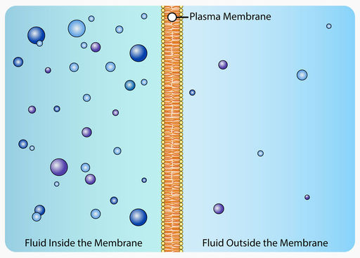
Think Critically
7. Compare and contrast simple diffusion and facilitated diffusion. For each type of diffusion, give an example of a molecule that is transported that way.
8. Explain how cell transport helps an organism maintain homeostasis.
Points to Consider
All cells share some of the same structures and basic functions, but cells also vary.
-
Plant cells have structures that animal cells lack. What important process takes place in plant cells but not in animal cells that might explain their differences?
-
All cells, including both plant and animal cells, need energy for processes such as active transport. How do cells obtain the energy they need?
Opening image copyright Sebastian Kaulitzki, 2010.
http://www.shutterstock.com
. Used under license from Shutterstock.com.
For “Introduction to Cells” Review Question 4: Both cell images copyrighted by Sebastian Kaulitzki, 2010.
http://www.shutterstock.com
. Used under licenses from Shutterstock.com.
For “Cell Transport and Homeostasis” Review Question 6: Diffusion image created by CK-12 Foundation - Rupali Raju. CC-BY-NC-SA 3.0.
References
-
Cork cell: Robert Hooke, Micrographia,1665; Tree branch: Image copyright Nataly-Nete, 2010.
Cork cell: http://commons.wikimedia.org/wiki/Image:RobertHookeMicrographia1665.jpg; Tree branch: http://www.shutterstock.com
. Cork cell: Public Domain; Tree branch: Used under license from Shutterstock.com
-
Ian Sutton (Flickr: jbsut).
http://www.flickr.com/photos/22616984@N07/3403951330/
. CC-BY 2.0
-
Dartmouth Electron Microscope Facility.
http://commons.wikimedia.org/wiki/File:Chlamydomonas_TEM_07.jpg
. Public Domain
-
CK-12 Foundation - Hana Zavadska. . CC-BY-NC-SA 3.0
-
Nerve cell: WA Lee et al.; Blood cell: Courtesy of National Institute of Health; Bacteria: TJ Kirn, MJ Lafferty, CMP Sandoe, and RK Taylor; Algae: EF Smith and PA Lefebvre; Pollen: L Howard and C Daghlian.
Nerve cell: http://en.wikipedia.org/wiki/File:GFPneuron.png; Blood cell: http://commons.wikimedia.org/wiki/File:Redbloodcells.jpg; Bacteria: http://remf.dartmouth.edu/images/bacteriaSEM/source/1.html; Algae: http://remf.dartmouth.edu/images/algaeSEM/source/1.html; Pollen: http://remf.dartmouth.edu/images/botanicalPollenSEM/source/10.html
. Nerve cell: CC-BY 2.5; Blood cell: Public Domain; Bacteria: Public Domain; Algae: Public Domain; Pollen: Public Domain
-
Mariana Ruiz Villarreal (LadyofHats).
http://commons.wikimedia.org/wiki/File:Average_prokaryote_cell-_en.svg
. Public Domain
-
Mariana Ruiz Villarreal (LadyofHats).
http://commons.wikimedia.org/wiki/File:Animal_cell_structure_en.svg
. Public Domain
-
Image copyright Kannanimages, 2010.
http://www.shutterstock.com
. Used under license from Shutterstock.com
-
Image copyright alxhar, 2012; modified by CK-12 Foundation - Zachary Wilson and Mariana Ruiz Villarreal (LadyofHats).
http://www.shutterstock.com
. Used under license from Shutterstock.com
-
LadyofHats for the CK-12 Foundation. . CC-BY-NC-SA 3.0
-
Flagella: Courtesy of Dr. Stan Erlandsen/Centers for Disease Control and Prevention (Image #11643); Cilia: Courtesy of Charles Daghlian.
Flagella: http://phil.cdc.gov/phil/home.asp; Cilia: http://en.wikipedia.org/wiki/File:Bronchiolar_epithelium_3_-_SEM.jpg
. Both images are in the public domain
-
Courtesy of National Institute of Health (NIH).
http://en.wikipedia.org/wiki/File:FluorescentCells.jpg
. Public Domain
-
Mariana Ruiz Villarreal (LadyofHats), modified for CK-12 Foundation.
http://commons.wikimedia.org/wiki/File:Endomembrane_system_diagram_en.svg
. Public Domain
-
Mariana Ruiz Villarreal (LadyofHats).
http://commons.wikimedia.org/wiki/File:Plant_cell_structure_svg.svg
. Public Domain
-
Swami Stream.
http://www.flickr.com/photos/araswami/2533000282/
. CC-BY 2.0
-
stellarr.
http://www.flickr.com/photos/21187899@N03/2058985902/
. CC-BY 2.0
-
CK-12 Foundation - Hana Zavadska, based on image by Mariana Ruiz Villarreal (LadyofHats) (http://commons.wikimedia.org/wiki/File:Scheme_simple_diffusion_in_cell_membrane-en.svg). . CC-BY-NC-SA 3.0
-
CK-12 Foundation - Hana Zavadska, based on image by Mariana Ruiz Villarreal (LadyofHats) (http://commons.wikimedia.org/wiki/File:Scheme_facilitated_diffusion_in_cell_membrane-en.svg). . CC-BY-NC-SA 3.0
-
CK-12 Foundation - Hana Zavadska, based on image by Mariana Ruiz Villarreal (LadyofHats) (http://commons.wikimedia.org/wiki/File:Scheme_sodium-potassium_pump-en.svg). . CC-BY-NC-SA 3.0
-
LadyofHats for the CK-12 Foundation.
http://en.wikipedia.org/wiki/File:BioDigital_Exocytosis.jpg
. CC-BY-NC-SA 3.0
{kind=link}
{kind=link}
{kind=link}
{kind=link}
{kind=link}
{kind=link}
{kind=link}
{kind=link}
{kind=link}
{kind=link}
{kind=link}